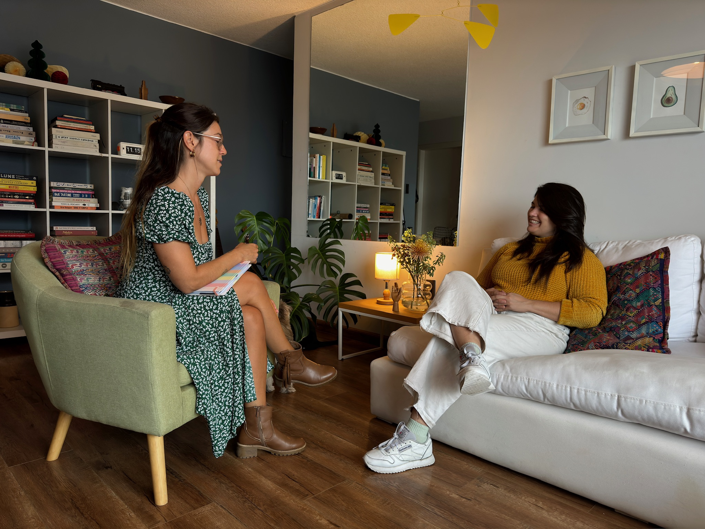

De qué forma
Uno de mis objetivos es encontrar la modalidad de trabajo que mejor se adapte a tus necesidades y expectativas.
La Bio-individualidad es una de las características principales de mi estilo de coaching: todos somos diferentes y lo que es efectivo para algunos puede no serlo para otros.
Me gusta personalizar cada proceso y diseñar juntos un programa que sea óptimo para ti, alineado con tus aspiraciones, necesidades y disponibilidad.
Trabajar juntos puede verse de muchas formas:
- Sesiones online y/o presenciales
- Procesos de tres meses encontrándonos una vez por semana
- Procesos de seis meses con encuentros cada quince días
- Procesos intensivos de un mes con dos encuentros por semana
- Sesión única de estrategia de salud intergral de 90 minutos
¡Me encantaría escuchar tus ideas y propuestas!
¿Conversamos?
Click aquí para tener una sesión de presentación sin costo de 30 minutos.